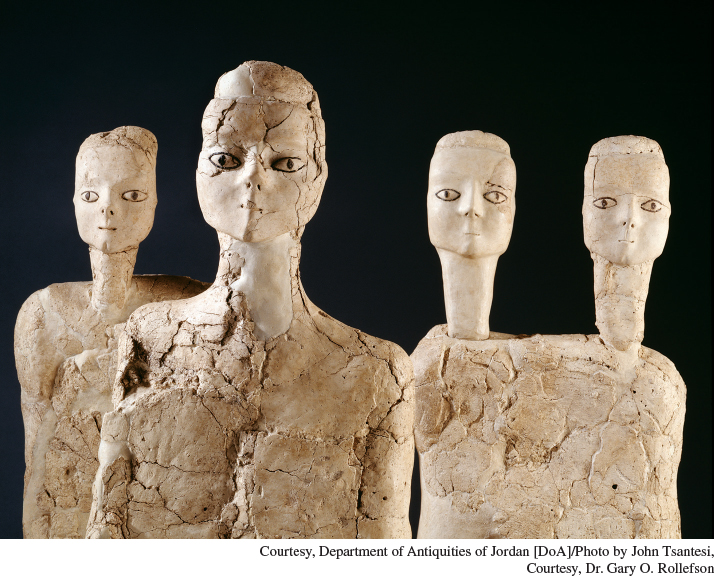

The Statues of Ain GhazalAmong the largest of the early agricultural settlements investigated by archeologists is that of Ain Ghazal, located in the modern state of Jordan. Inhabited from about 7200 to 5000 B.C.E., in its prime it was home to some 3,000 people, who lived in multi-roomed stone houses; cultivated barley, wheat, peas, beans, and lentils; and herded domesticated goats. These remarkable statues, around three feet tall and made of limestone plaster applied to a core of bundled reeds, were among the most startling finds at that site. Did they represent heroes, gods, goddesses, or ordinary people? No one really knows.(Courtesy, Department of Antiquities of Jordan [DoA]/Photo by John Tsantesi, Courtesy, Dr. Gary O. Rollefson)